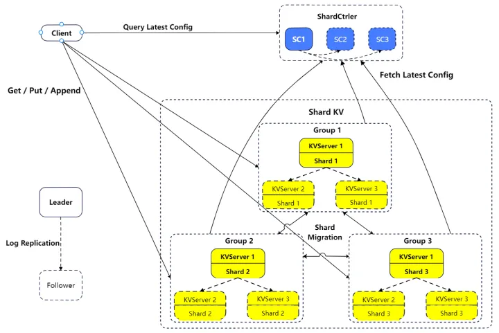

MIT-6.824 Lab4: 切片 KV 数据库
摘要
本篇是 MIT 6.824 实验课程的最后一篇，实现一个高可用的、分片的 KV 数据库。分片能够有效解决单节点能承载的并发量问题，成倍地提升读写并发，但需要处理配置更新、切片迁移、删除等问题。
遵循课程规定，本文没有放出核心代码，只介绍了一些结构设计和流程思考，可放心食用。
整体架构
下面是 ShardKV 的架构图，图片来源（mit-6.824 2021 Lab4：ShardKV - 知乎 (zhihu.com)）。

ShardCtrler
基于 Raft 构建的切片配置服务，client 可以通过 Join/Leave/Move/Query 四个 rpc，增查配置。默认有 10 个切片，根据 hash 取模得到 key 对应的切片。每个 config 由两部分组成，切片映射和多个复制组。每个复制组存储了一个切片子集的数据（一个切片的数据只会存储在一个复制组内），内部使用 Raft 实现高可用。切片映射用于将切片映射到复制组。从代码角度看，Config 结构体内包含：
1 | type Config struct { |
- Num：自增的配置编号
- Shards：shard 和 gid 的对应关系，将切片映射到复制组
- Groups：每个复制组拥有的 kv server
ShardKV
KV 存储的服务端，存储若干个切片的 KV 数据。需要周期性检测配置更新，进行配置更新、分片数据迁移、清理等工作。
客户端会依据最新的 shard 配置，发起 PUT/GET/APPEND 请求到 key 对应的服务端。
思考
在盲目写代码之前，应该先理解背景和问题，思考需要做哪些事情、怎么做。
ShardCtrler 的操作含义
复制组（Replica Group）是指一组用于 ShardKV 服务的，内部互为复制关系的服务器。刚开始看到这个词可能会觉得有点表意不清。一个复制组内可能会持有一个或多个切片的数据。ShardCtrler 向 client 暴露 4 种 rpc：
- Join：增加一个复制组用于 ShardKV 服务，即我们常说的扩容，需要进行负载均衡
- Leave：移除一个 ShardKV 复制组，即我们常说的缩容，需要进行负载均衡
- Move：将一个切片的数据移动到另一个复制组，这个主要是方便测试用的
- Query：查询某个版本的配置状态
前三种修改配置的操作，实际上是新增了一个配置。上面提到的负载均衡是指，将切片均匀地分散到复制组上，并尽可能少地转移数据。如何实现呢，其实也容易，每次让拥有最多分片的复制组，分一个给拥有最少分片的复制组，直到两者的分片数量差 <=1 即可。
这里需要处理一些边界情况。例如初始时，所有切片都是在默认的无效组 0 上，新来一个复制组，就应该把所有切片都分给它，而不该把 0 当成一个有效的组，给它分 5 个。
ShardKV 配置更新意味着什么
每次配置变动后，一个复制组可能会失去某些切片，获得一些切片，进而需要：
- 新获得的切片：获取对应的切片数据
- 失去的切片：当新的复制组受理数据后，将切片数据删除
ShardKV 由谁负责配置更新
在一个复制组内，多个节点要利用 Raft 保证线性一致性。如果配置更新各自独立完成，一致性就会被打破，出现问题。因此，还是要利用 Raft，由 leader 节点发起配置更新并逐步地完成，follower 只需要被动提交日志即可。
ShardKV 检测配置更新流程
在 leader 侧，有一个后台线程，隔一段时间，例如 50-100ms 检查配置更新，这一点是毋庸置疑的。问题是检查哪个配置，最新的配置吗？
不不不，不可以。检查最新的配置可能会出现配置突变的情况，假设，目前的 config1，shard1 在 g100 上，发生了如下事情：
- client 提交了 config2，shard1 被分给 g101
- g101 获取到了 config2，希望从 g100 获得 shard1
- client 提交了 config3，shard1 又被分给了 g100
- g100 获取到了 config3，觉得自己什么都不用做
这就出现了不一致的问题。因此正确答案是，复制组需要保存当前的配置，每次检查是否存在下一个版本的配置，进行更新。这样可以保证所有的节点按同样的顺序更新配置。
另一个问题是，leader 一次能够处理几个配置更新？这个也显然是 1 个，当 leader 处在配置更新中时，应该暂停检测更新。换而言之，检测到配置更新后，应该阻塞到配置更新完毕，再继续检测。
ShardKV 怎么进行切片转移
常规来看，数据转移有两种模式：
- 一种是拉（PULL），每个复制组去主动拉取自己需要的数组
- 一种是推（PUSH），每个复制组将其他复制组需要的切片数据推送给它们
我个人认为拉的模式更好。考虑扩容的场景，新的复制组没有任何数据和用户请求，由它来主导发起数据请求，其他复制组被动回应，再好不过了。
ShardKV 拉取数据
需要拉取哪些数据？基础的 KV 映射是必须的，但是还不够，还需要把请求的去重表也进行同步，否则，在收到历史消息后，可能会有重复执行的问题。
拉取数据时，配置不一致怎么办？不可以直接拉取，需要等到配置一致了才可以进行，否则会有问题。考虑下面的场景：
- config1 时 x=1 在 g100
- 发布 config2，x 在 g101
- g101 检测到 config2，向 g100 拉取 x
- g100 返回 x=1
- g100 收到历史消息，
put x 2，发现自己不在配置更新中，处理
究其原因，配置不一致时，不同复制组对切片数据的行为可能是冲突的，使得历史消息的执行出现问题。
ShardKV 何时删除切片数据
正如之前讨论的，当新的复制组受理数据后，原复制组可以将可以将多的一部分数据删除。受理需要等待新的复制组 commit 数据，原来的数据才是彻底没用了，否则，可能由于节点下线等，需要重新请求、
因此，可以使用类似回调的模式，当新的复制组受理数据后，通知原复制组对原有数据进行删除。
ShardKV 新增的操作类型
除了基础的 GET/PUT/APPEND，为了支持配置更新、切片迁移等的同步一致，需要设计新的操作，可以分为以下几类：
- 配置更新开始的操作，通知整个复制组开始进行配置更新。复制组内必须对配置更新达成共识，这样 leader 下线后，其他节点才能继续更新工作。
- 切片数据的增删操作，当 leader 收到增删切片数据后，通知整个复制组。
- 配置更新的结束操作，通知复制组配置更新完成。
这几步基本都是必须的，要考虑 leader 下线 / 其他节点成为 leader 的变动下，配置更新的状态不会丢失，必须把相关的操作使用 Raft 同步。
ShardKV 配置更新流程
- 后台线程检测到新配置，提交到 Raft，等待更新完成
- server apply 新配置，将 server 标识为配置更新中，开启新的异步线程 t1 用以处理
- t1 计算需要 pull 的切片，并发获取
- t1 获取到的切片数据，提交给 Raft
- t1 等到某个切片数据新增的操作 apply 后，发起删除数据的 rpc
- t1 等到所有数据删除成功后
- t1 将配置更新结束提交到 raft，等待执行
- server apply 结束操作，将 server 标识为配置更新结束
在上述过程中，新的配置从 2 开始生效，server 开始根据最新的配置拒绝 ErrWrongGroup 的请求，对于 group 正确，但处在迁移中的数据，需要等到 8 之后才能受理，这时候可以返回给 client 一个等待信号，例如 ErrWait，让客户端等一会儿再重试，避免大量线程阻塞在 server 端。
在 challenge 里面，需要我们在 5 之后就开始处理对应切片的请求，达到快速响应的效果。
删除切片数据是同步还是异步
当然，同步是最好写的。但是同步会阻塞后续请求，不优雅。异步的话，需要重新设计，否则只有一个 map[string]string 作为数据库的情况下，异步也得加锁、找到切片对应的 key，删除，解锁，跟同步没有什么区别。
如果要异步的话，建议搞一个 []map[string]string，slice 位置存对应 shard 的数据，要删除的时候，直接锁对应的 shard，删除即可。甚至也可以直接把 slice 对应位置设成 nil，等 go 的垃圾回收线程去回收，更优雅（笑
Operation
GET/PUT/APPEND 就不说了
1 | type ConfigureOp struct { |
ConfigureOp：开始配置更新ShardOp：切片数据的 Insert、Delete 操作，简便起见把标识更新结束的 End 也加进来了
server
1 | type ShardKV struct { |
基于之前的讨论，可以设计出这样的结构体。server 需要记录最新的 config 和上一个 config，并持久化到快照里，用于重启后知晓自己是否处在配置更新中。这里用指针其实更合适一点，配置更新中等价于 prevConfig!=nil，但是 gob 不能处理空指针的序列化，就很坏。
有了两个 config 之后，要怎么使用呢：
- 配置更新开始时，设置
prevConfig=currentConfig ; currentConfig=op.Config - 更新完毕后，设置
prevConfig.Num=0，配置更新中 <=>prevConfig.Num!=0 - 根据
prevConfig.Shards和currentConfig.Shards，计算需要拉取、删除的 shard - 拉取删除数据时，要依赖
prevConfig.Groups找到对应的endname发起请求 - 当成功删除某个 shard 后，更新
prevConfig.Shards[shard]=currentConfig.Shards[shard]，唤醒更新线程，再次检查是否存在需要等待删除的 shard
注意，在插入 shard 数据后，不能更新 config！！！不然会有重启后，切片数据删除不掉的问题，假设存在下面的配置更新：
- [100,100]->[101,101]
- 101 拿到并 apply 切片 0,1 之后，发起删除切片之前，宕机了
- 101 新选举出 leader 后，发现自己没有需要拉取的数据了（因为 config 已经更新过了），也没有需要删除的数据，直接更新结束了
- 100 一直干巴巴地等着数据删除的请求，但那永远不会到来了...
challenge 2 不阻塞其他切片数据请求
要求即使在配置更新中，如果请求的数据不处于切片迁移中，应该正常处理，不能阻塞。
这就需要我们检查单个切片的迁移状态，且 apply 配置更新时不能阻塞 applier 线程。我这里使用了一个 inMigration
map[int]bool，记录哪些切片是还没有拉取到的，该字段同样需要存储在快照中。
- 在配置更新开始的时候，根据
prevConfig,cuurentConfig计算inMigration - apply 一条 Insert
ShardOp，如果在
inMigration中，应用 op 且从inMigration中删除 - 用户请求到来时，根据
inMigration判断是否阻塞
究其原因是，不能在 Insert
ShardOp 更新 prevConfig 后，就缺少了实时反映数据同步进度的状态，就有了 inMigration。
challenge 2 快速响应
要求在配置更新中，在收到部分 shard 数据后，应该立刻开始处理请求，不能等到配置更新结束再处理。在测试代码中，可以看到，持有旧切片的复制组直接下线了，这种情况下配置更新永远无法完成，没有快速响应，系统就永远无法处理用户请求。
这里需要注意的就是上面高亮的步骤 2，需要加幂等性校验。因为可能 server 执行了一些这个切片的数据更新后，在配置更新中下线了，之后重启，由重新拉取了一份旧数据，如果直接覆盖，就会导致更新丢失。
总结
这门分布式系统的课程，一路学来、做实验，让我收获很多。在不可靠的网络中（分区、丢失、乱序），能够实现一个分区容错、强一致的分布式系统，还是很有成功感的。
由于时间限制，这篇博客没有写的很详细，但还是希望这篇博客能帮到你，有问题也可以评论交流～